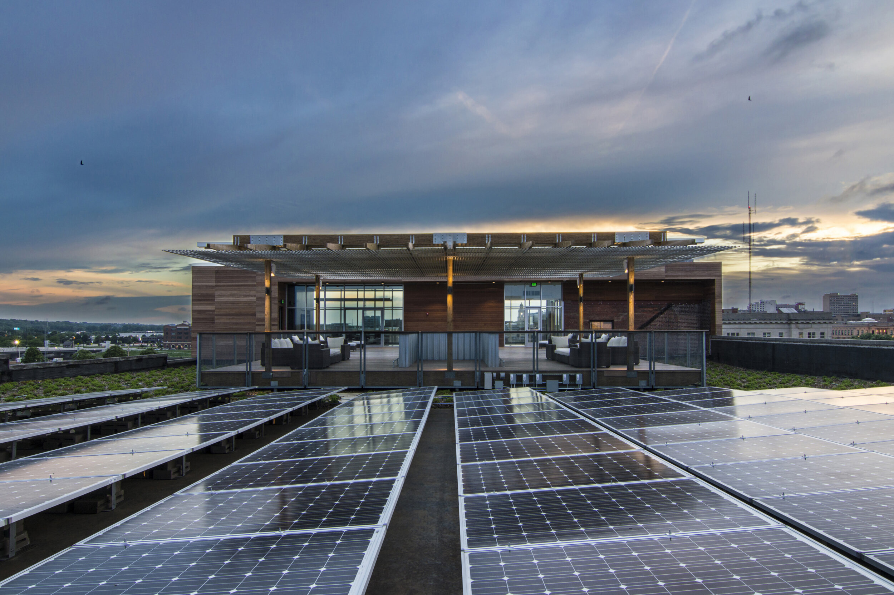

AI Consultation and Training
Readiness audits, workshops, prompt libraries, role-specific workflows, responsible-use guidance, and a roadmap for where AI should actually enter the business.
Services
Jackall Creative gives growing companies a practical partner for AI strategy, workflow design, websites, branding, proposals, photography, video, and the recurring marketing work that usually falls between roles.
Use AI to reduce friction. Use creative production to make the strategy visible. Keep both connected.
Service architecture
The original Jackall range stays intact. The difference is that AI consultation now helps determine what to make, how to make it faster, and how to turn repeated work into reusable systems.
Readiness audits, workshops, prompt libraries, role-specific workflows, responsible-use guidance, and a roadmap for where AI should actually enter the business.
Content engines, proposal workflows, review processes, knowledge bases, intake forms, meeting-to-action systems, and documentation for recurring work.
Website strategy, static builds, landing pages, Squarespace migration, Cloudflare Pages setup, SEO foundations, analytics, redirects, and launch support.
Positioning, service architecture, visual identity direction, logo systems, brand language, tone, and the connective message between AI and creative services.
RFP responses, proposal templates, presentation decks, business cards, print pieces, sales sheets, one-pagers, and document systems that can be reused.
Architecture, commercial real estate, construction, headshots, product, company profiles, interviews, YouTube channels, B-roll, and short-form assets.
CRM-adjacent systems, event support, follow-up workflows, relationship content, project storytelling, and marketing operations for teams that sell through trust.
Ongoing support for teams with a backlog spanning AI, web, brand, content, photography, video, proposals, and recurring marketing execution.
How the services connect
The work starts by mapping the business problem. From there, Jackall decides whether the answer is AI training, a workflow, a website, a content system, a proposal package, a media shoot, or a combined build.
Example engagement
Rebuild the site on Cloudflare, reorganize the offer, select proof from the image archive, and create an AI-assisted workflow for future case studies, blog posts, and proposal content.
Service examples
Clear packages make the range easier to understand without reducing every client to the same project.
Audit the team's tools, repeated work, content bottlenecks, privacy concerns, and first implementation opportunities.
Move off Squarespace, sharpen the brand message, rebuild the site for Cloudflare, and organize the proof that buyers need.
Plan and produce the creative assets that feed the website, sales process, recruiting, social media, and proposals.
Ongoing AI and creative support for teams that need a practical operator across several unfinished initiatives.



Existing creative depth
Jackall's past work spans engineering firms, construction companies, commercial real estate developers, libraries, restaurants, orthodontics, product photography, and technology companies. The AI message gets stronger because the creative execution is real.